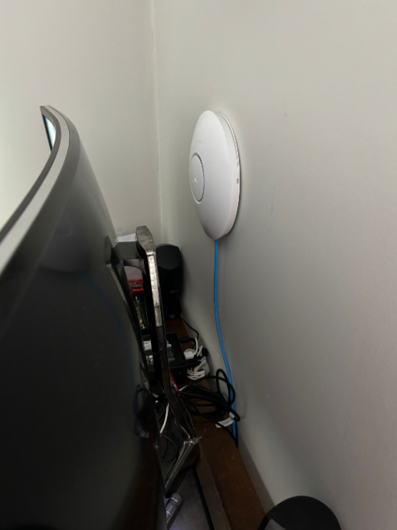
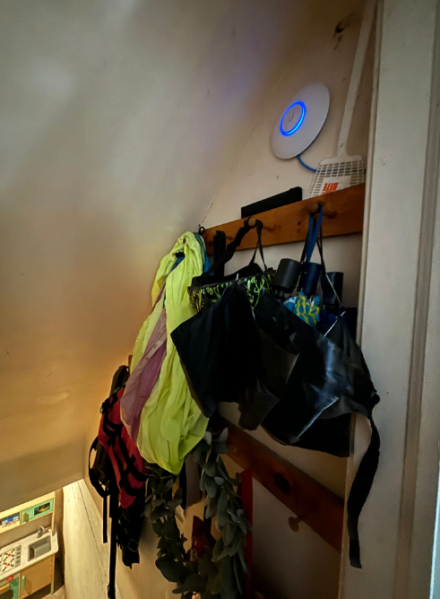
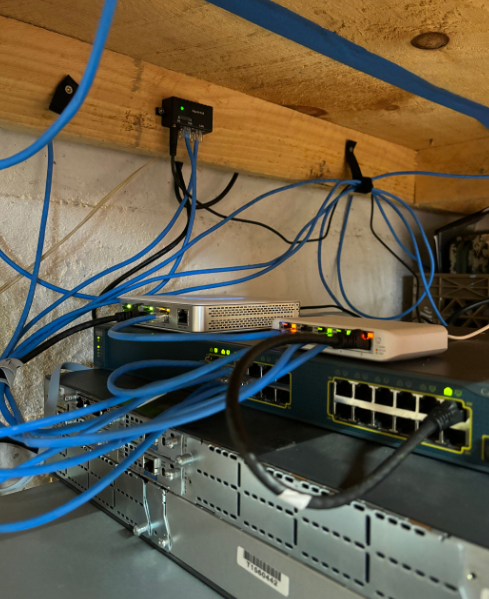
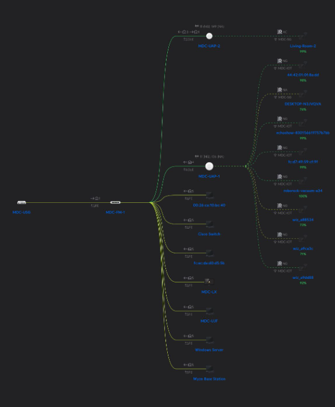

IT PROFESSIONAL, CREATOR, & MUSICIAN
There Is Strength In Numbers - 20240106
My previous entries were made when I first started the project in November of 2023. I've since done extensive work and the next few entries will be part of catching up with my documentation.
I've purchased 4 Unifi devices off of eBay. To round off my Unifi ecosystem, I have one Unifi Cloud Key that allows me to access my network controller from anywhere so long as the cloud key has internet access. 1 Unifi Securtity Gateway, this one allows firewall rules and routing config to be a breeze I've also replaced my Cisco Router by using this. 1 Unifi Flex-Mini 5 port switch, this is going to connect my WAPS, Cisco Switch, and other peripherals to the USG.
 My WAPs are placed at equal distance from eachother at opposite sides of the house, one in the stairwell, and one behind my primary workstation.
 Here you can see the progress I've made with hardware and all the many cable runs I've installed so far as well the network topology in my Unifi Controller App.
I've configured my Cisco Switch and unifi devices to subnet my network into 4 networks. There is a 5G, IOT, Default, and VPN. There are firewall rules placed between the IOT network so that devices on the IOT network can not communicate with the other networks but the other networks can communicate with the IOT network.